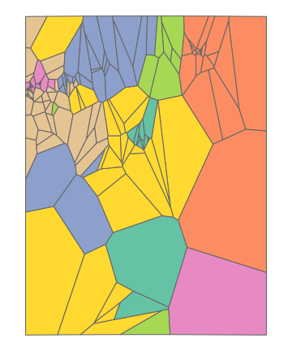

library(tidyverse)
library(sf)
library(vegan)
library(RColorBrewer)
library(viridisLite)
library(pheatmap)
library(factoextra)
library(knitr)
library(kableExtra)
knitr::opts_chunk$set(comment="", cache=T, warning = F, message = F, fig.path = "images-mthood/",
dev="svglite", dev.args=list(fix_text_size=FALSE),
fig.height=6, fig.width=5, out.width="900px")iNaturalist observations
Download research-grade iNaturalist observations from GBIF. Then color observations by phylum. Draw rivers from OpenStreetMap. You can see clusters of observations for…
#area for GBIF download
box <- st_as_sfc("POLYGON((-122.4 44.5,-120.95 44.5,-120.95 45.85,-122.4 45.85,-122.4 44.5))") %>% st_set_crs("WGS84")
#GBIF data with iNaturalist observations
dat.all <- read_tsv("data/0048360-260806074905277.csv.gz")
rare_cutoff <- 100 #drop rare species
dat.common <- dat.all %>%
filter(coordinateUncertaintyInMeters < 1000) %>%
group_by(species) %>% filter(n()>rare_cutoff) %>% drop_na(species) %>%
mutate(species=factor(species), species_int = as.integer(species)) %>% as.data.frame()
dat.points <- dat.common %>% st_as_sf(coords = c("decimalLongitude", "decimalLatitude"), crs = "WGS84")
phyla <- c(plant="Tracheophyta", mollusc="Mollusca", vertebrate="Chordata", basidiomycete="Basidiomycota", ascomycete="Ascomycota", arthropod="Arthropoda")
specs <- dat.points %>% as.data.frame %>% count(species, phylum, name="n_total") %>%
mutate(phylum = fct_recode(phylum, !!!phyla))
phylum_pal <- set_names(brewer.pal(6, "Set1")[c(1,2,4,6,5,3)], levels(specs$phylum))ggplot() +
geom_sf(data=dat.points, aes(color=fct_recode(fct_rev(phylum), !!!phyla)), size=0.3) +
coord_sf(expand = F)+
theme_void() + theme(plot.background = element_rect(fill = "black"), legend.text = element_text(color = "white"))+
scale_color_brewer("",palette = "Set2", guide=guide_legend(override.aes = list(size=4))) 
group_by_cell <- function(points, grid, min_obs=0) {
#assign points to cells
dat.grid.cells <- st_intersects(grid, points)
grid$n_obs <- lengths(dat.grid.cells) #count points in each cell
#drop cells with few observations
cells.full <- which(grid$n_obs > min_obs)
grid.full <- grid[cells.full,]
#tally number of each species in each cell
dat.grid <- t(sapply(dat.grid.cells, function(x) table(points$species[x])))
rownames(dat.grid) <- grid$grid_id
dat.grid.full <- dat.grid[cells.full,]
list(data = dat.grid.full, grid = grid.full)
}Density of observations
Divide the area into hexagons and color by observation density. Missing cells have less than 20 observations.
hex_dim <- 15 #number of hexagons on each side
hex.sfc <- dat.points %>% st_make_grid(n=c(hex_dim, hex_dim), square = F)
hex <- hex.sfc %>% st_sf() %>% mutate(grid_id = 1:length(lengths(hex.sfc)))
hex_min_obs <- 20 #minimum number of observations allowed in cell
hex.obj <- group_by_cell(dat.points, hex, min_obs=hex_min_obs)
dat.hex <- hex.obj$data
hex.full <- hex.obj$grid
ggplot() +
geom_sf(data=hex.full, aes(fill=n_obs), linewidth=2, color="grey70") +
theme_void() + scale_fill_viridis_c("Obs", option="magma") 
Divide into areas of similar population
The number of observations in the hex grid is too uneven. Instead, try to divide the area into polygons of more even populations. First, sample some random seed observations - dense observations areas should have more sampled points. Then, define the region that is closest to each point, makig a Voronoi diagram. The relative variation in observation number per cell is now half that of the hex grid.
n_seeds <- 144
set.seed(1)
dat.sample <- sample_n(dat.points, n_seeds)
tri <- dat.sample %>% st_geometry() %>% do.call(c, .) %>% st_voronoi() %>%
st_collection_extract() %>% st_set_crs("WGS84") %>% st_sf() %>%
mutate(grid_id = 1:nrow(.)) %>% st_intersection(box)
tri_min_obs <- 8 #minimum number of observations allowed in cell
tri.obj <- group_by_cell(dat.points, tri, min_obs=tri_min_obs)
dat.tri <- tri.obj$data
tri.full <- tri.obj$grid
ggplot() + geom_sf(data=tri.full, aes(fill=n_obs), linewidth=0.5, color="grey70") +
theme_void() + scale_fill_viridis_c("Obs", option="magma", limits=c(0,NA))
Cluster similar communities
Look at the observed community composition in each cell, defined as the relative abundance of each taxon. Assign each cell to a cluster of similar communities using the k-means algorithm. Set the number of clusters and assign each a color.
fviz_nbclust(decostand(dat.tri, "hellinger"), kmeans, method = "wss")
fviz_nbclust(decostand(dat.tri, "hellinger"), kmeans, method = "silhouette")
fviz_nbclust(decostand(dat.tri, "hellinger"), kmeans, method = "gap_stat")n_clusters <- 7
pal <- c(brewer.pal(8, "Set2"), brewer.pal(12, "Set3"))[1:n_clusters] %>% set_names(1:n_clusters)
set.seed(1)
tri.km <- dat.tri %>% decostand("hellinger") %>% kmeans(n_clusters)
tri.full$cluster <- factor(tri.km$cluster)
ggplot() + geom_sf(data=tri.full, aes(fill=cluster), linewidth=0.5, color="grey40") +
theme_void() + scale_fill_manual(values=pal, guide="none")
Standout species in each cluster
The 5 most frequently observed species (across the dataset) that occur more than 2 standard deviations above the mean in each cluster (sorted by the mean).
sigma <- 1.8
standout <- tri.km$centers %>% scale() %>% as.data.frame() %>% rownames_to_column("cluster") %>%
pivot_longer(-cluster, names_to="species", values_to="scaled_mean") %>%
filter(scaled_mean > sigma) %>%
left_join(specs)%>%
group_by(cluster) %>% slice_max(n_total,n=5) %>%
arrange(desc(scaled_mean)) %>% mutate(rank=1:5)
# ggplot(standout, aes(y=cluster, x=scaled_mean, size=n_total, color=phylum)) + geom_point() +
# scale_color_manual(values = phylum_pal)
standout %>% select(cluster, species, rank) %>%
mutate(species = cell_spec(species, color = pal[cluster], italic=T, bold=T)) %>%
pivot_wider(names_from=cluster, names_sort=T, values_from=species) %>%
kable(escape = FALSE) | rank | 1 | 2 | 3 | 4 | 5 | 6 | 7 |
|---|---|---|---|---|---|---|---|
| 1 | Calochortus subalpinus | Lomatium columbianum | Valeriana congesta | Haliaeetus leucocephalus | Ailanthus altissima | Rhododendron macrophyllum | Corydalis scouleri |
| 2 | Sorbus sitchensis | Triteleia grandiflora | Sedum oreganum | Pandion haliaetus | Apocynum androsaemifolium | Cornus unalaschkensis | Digitalis purpurea |
| 3 | Tsuga mertensiana | Olsynium douglasii | Prosartes hookeri | Pseudacris regilla | Apis mellifera | Clintonia uniflora | Ariolimax columbianus |
| 4 | Valeriana sitchensis | Eriogonum compositum | Sedum spathulifolium | Odocoileus hemionus | Eschscholzia californica | Chrysolepis chrysophylla | Rubus spectabilis |
| 5 | Pedicularis racemosa | Lithophragma parviflorum | Erythranthe alsinoides | Thamnophis sirtalis | Lathyrus latifolius | Oplopanax horridus | Claytonia sibirica |
Species that vary across space
To visualize the similarity between communities in each Voronoi cell, run an NMDS ordination on relative abundances. Each point represents a cell, with cells of similar communities clustering together. The colors for each cluster are the same as above. Common species are labeled near the cells where they are most observed and colored by their taxonomic order. The communities are broadly organized by phylum.
plot_nmds <- function(data, grid, min_to_show) {
nmds <- metaMDS(data, trace=F)
par(bg="grey30", mar=c(0,0,0,0))
plot(nmds, type="n", axes=F, ann=F)
points(nmds, display="sites", col=pal[grid$cluster], pch=19)
text(nmds, display="species", cex=0.7, font=4,
col=if_else(specs$n_total > min_to_show, phylum_pal[specs$phylum], alpha("black",0)))
legend("topleft", levels(specs$phylum), fill=phylum_pal, bty="n", text.col="white")
par(bg="white")
}
plot_nmds(dat.tri, tri.full, 300)
Heatmap
pheatmap(t(decostand(dat.tri, method="hellinger")), clustering_method="mcquitty", color = mako(100),
annotation_col = data.frame(cluster=tri.full$cluster, row.names=1:nrow(tri.full)),
annotation_row = data.frame(phylum=specs$phylum, row.names = specs$species),
annotation_colors = list(cluster=pal, phylum=phylum_pal), fontsize = 4)
Arrange clusters along gradient
Try to order the clusters by similarity in a linear gradient. This could potentially capture an urban to forested gradient, or riparian to upland, or what people are interested in for different areas. To do this, run a 1 dimensional NMDS ordination of the centers of each cluster, which orders clusters along the number line. Then map the ordered cluster number to a color scale.
tri.km.nmds <- metaMDS(tri.km$centers, k=1, trace=F)
tri.full$cluster_ordered <- factor(as.integer(factor(tri.full$cluster, levels=order(t(tri.km.nmds$points)))))
ggplot() + geom_sf(data = tri.full, aes(fill = cluster_ordered), linewidth=0.5, color="grey80") +
theme_void() + scale_fill_viridis_d("Cluster", option="mako", guide="none")